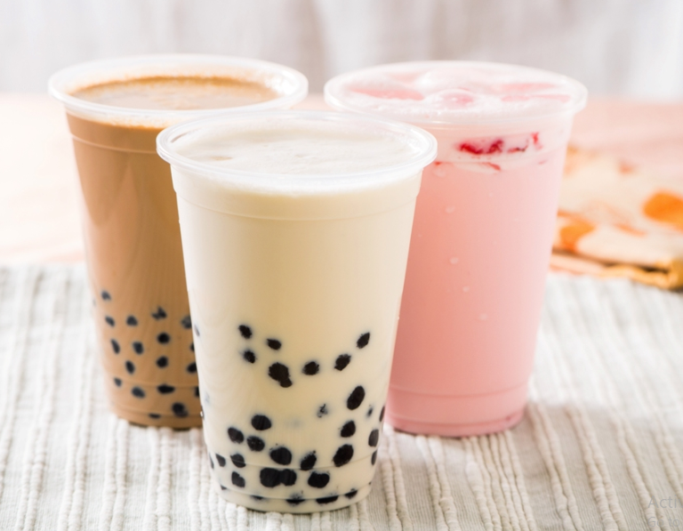

Trà trân châu hay trà sữa trân châu là thức uống được chế biến từ trà xanh hoặc trà đen được các cửa hàng đồ uống tại Đài Trung, Đài Loan phát triển từ những năm 1980. Đặc điểm của trà trân châu là khi bị lắc, một lớp bọt nước mỏng được tạo thành trên bề mặt. Wikipedia Thành phần chính: Hạt trân châu, sữa/kem, bột trà, nước, đường Tên thay thế: Trà trân châu Người sáng tạo: Disputed Khu vực hoặc tiểu bang: Đông Á, Đông Nam Á, Nam Á, Bắc Mỹ, Châu Âu, Úc, New Zealand
